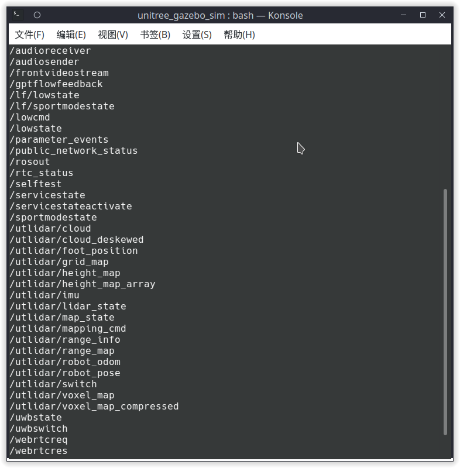
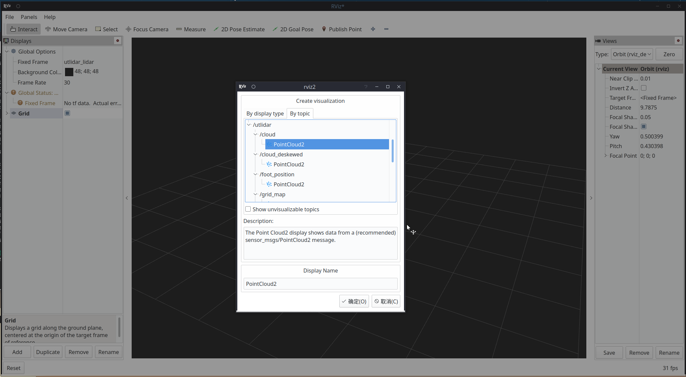
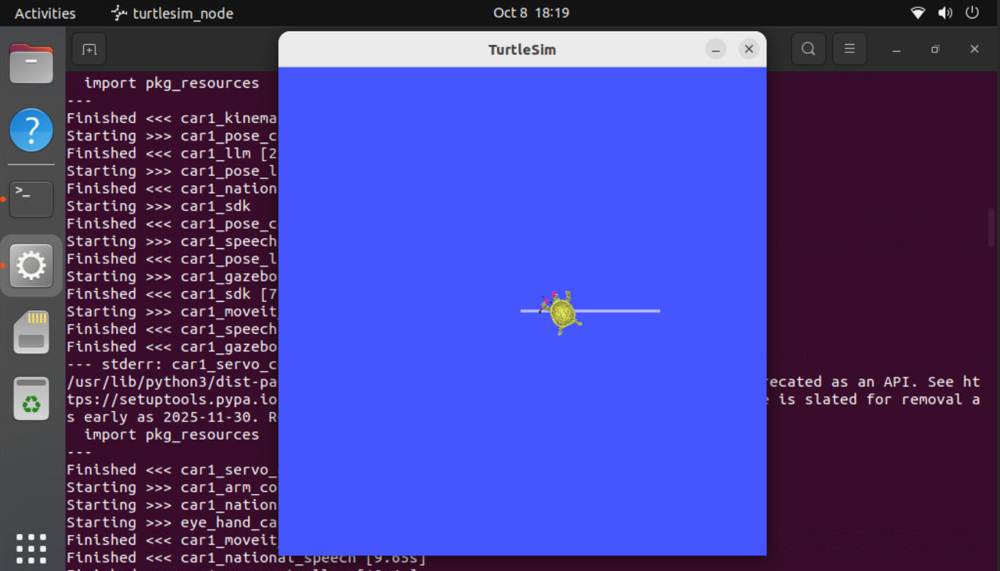

ROS2 简介：机器人软件的操作系统
ROS（Robot Operating System，机器人操作系统）是什么？为什么机器人需要这个 ROS"中间件"？本实验从机器人软件的协作之痛出发，讲清 ROS2 的三大设计支柱，拆解 ROS1 中心化 Master 与 ROS2 去中心化 DDS 的架构发展变化，再通过 talker / listener 跑通第一个 ROS2 的 HelloWorld 程序。
目标本课学完，你应该能做到
能讲出 ROS 不是操作系统，而是"通信框架 + 工具集 + 包生态"；能用自己的话说清"为什么机器人开发需要这层中间件"。
能说出 ROS2 相对 ROS1 在三个维度的核心改进：通信架构（DDS vs TCPROS）、编译系统（colcon vs catkin）、节点生命周期管理，并解释各自的工程意义。
能正确执行 ros2 --help 看可用命令组，用 ros2 run 起 talker 与 listener，亲眼看到"零配置互联"。
能用 ros2 node list / ros2 topic list / ros2 topic echo 观察运行中的节点拓扑与消息内容。
source setup.bash 为什么是每个终端的必做动作。难点：理解"去中心化"不是"没有中心"，而是"中心被拆散到每一端"。
source 养成本能。01问题引入：机器人软件为什么需要这个 ROS"中间件"
把机器人比作一个人：摄像头是眼睛、麦克风是耳朵、决策程序是大脑、机械臂和底盘是手脚——那"中间件"就是这套神经系统，把不同器官的信号翻译成统一语言。
神经系统把眼、耳、手、脚连成一个整体——传感器提供输入、决策做判断、执行器负责动作，ROS2 就是给机器人铺的这套"神经系统"。
相机说 USB 方言、雷达说串口方言、电机说 CAN 方言，决策程序听谁的都费劲——直接的后果就是下面这行红字：转接程序随零件数爆炸，换型号全部重写。
相机发 /image、雷达发 /scan，决策节点听普通话收、发普通话指令——换零件 = 换一个会说"普通话"的节点，别人的代码一行不改。中间件干的就是"统一说话"这件事。
四步把"为什么需要中间件"说透：
简单来说，ROS2 = 机器人的"普通话 + 微信群 + 一键工具箱"——谁写的应用都能插上就跑，多台电脑自动成网。本课所有内容，都是在拆解这句话。
02核心原理：ROS2 的三大设计支柱
没有 Master 单点。每个节点自带 DDS 参与者身份，通过组播自动发现彼此，组成一张"节点-话题"关系图。就像一个微信群：谁上线大家自动看见，谁退群也不影响别人聊天。
👉 本支柱专属展开：见下方"总机 vs 群聊"对比
Python（rclpy）、C++（rclcpp）乃至 Swift/Java 都能发声——接口由 IDL 消息定义统一约束，与实现语言解耦。
👉 本支柱专属展开：见下方"同一份消息合同"图解
ros2 CLI、rqt、rviz2、rosbag2、launch——同一套图信息喂给全部工具，"看不见的系统"随时可自省。
👉 本支柱专属展开：下方三张真实运行截图 · 完整工具链见 EXP-02
先看一个熟悉的场景再看机器：老式总机转接电话——总机下班，全网失联；微信群——谁上线自动进群直接聊，谁退群都不影响别人。ROS1 选了总机（Master），ROS2 选了群聊（DDS）：节点自己组播发现，任意一个挂掉，其余照常。下面左半边是总机模式的下场，右半边是群聊模式的底气：
Python 写的节点和 C++ 写的节点，语言不通凭什么直接对话？——因为它们事先签好了同一份"消息合同"（IDL）：
| 对比维度 | ROS1（Melodic 及以前） | ROS2（Foxy / Humble / …） |
|---|---|---|
| 通信架构 | 中心化：Master(rosmaster) 统一注册 | 去中心化：DDS 点对点，无中心进程 |
| 底层协议 | TCPROS（自研 TCP 长连接） | RTPS（DDS 标准，UDP + 组播发现） |
| 节点发现 | 启动必须先起 Master，向它注册 | 组播自动发现，谁先谁后无所谓 |
| 编译系统 | catkin_make 单一 CMake 大工程 | colcon 每包独立构建，支持混合语言 |
| 生命周期 | 节点崩了只能重启整个进程 | Managed Node 四状态，可"待机-激活"恢复 |
| 服务质量 | 无 QoS，可靠性不可配 | QoS 三要素（可靠性/持久性/历史）可按话题配置 |
支柱三不是口号——下面是 ROS2 Humble 实机运行的真实截图（三张均取自本课程配套实验现场，点击图片可放大）：

topic list 一眼清点全系统话题

还有更多"开箱即用"在等你：rqt 图形化大全家、turtlesim 教学小海龟、rosbag2 录放时间机器、launch 一键拉起全系统——同一张计算图喂给所有工具，EXP-02 起逐个上手。
拼图收尾：三根柱子拼回整张图 —— ROS2 整体框架（中文版）
三根柱子讲完了，现在拼回整机。穿针引线的"针"就是你两个小节后要亲手跑的那条 Hello World: 1：楼越往下越靠近硬件，右栏的工具站在图外读图。任意点一层看它此刻在干什么，点 ▶ 播放 看这条消息怎么"下楼 → 过河 → 上楼"。
🏗 点击任意一层 · 由上到下 = 由"人话"到"网线"
👆 点左侧任意一层
这里会告诉你：这层是干什么的、此刻 Hello World 走到这层发生了什么、以及它对应哪根支柱。
图 1-3｜ROS2 整体框架（全中文）：①–③ 承载支柱②"语言无关"，⑤ 承载支柱①"去中心化"，工具栏承载支柱③——一条 Hello World 下六层、上六层，两边代码零连接
03RMW 抽象层与 Humble 发行版
ROS2 在应用与 DDS 实现之间插入了 RMW（ROS MiddleWare）抽象层，同一份代码可以运行在不同 DDS 实现上：
2022.05 发布的 LTS 版本，支持至 2027.05；此前 Foxy（2020）、Galactic（2021），此后 Iron、Jazzy。配套 Ubuntu 22.04。
RMW_IMPLEMENTATION=rmw_cyclonedds_cpp——排障时用来隔离"是不是 DDS 实现的锅"，无需改一行代码。
Unconfigured → Inactive → Active → Finalized：节点可"待机而不退出"，故障后原地恢复。
环境验证三板斧
# ① 确认发行版（预期输出 humble） echo $ROS_DISTRO humble # ② 加载 ROS2 环境（每个新开终端都要执行！） source /opt/ros/humble/setup.bash # ③ 看 ros2 命令认识自己的能力清单 ros2 --help # ... verbs: action bag interface launch node param pkg run service topic ... # ↑ 八大动词组，EXP-02 逐一拆解
echo $DISPLAY 确认非空。下面三条命令按序复制执行：# ① 装包（只需一次） sudo apt install ros-humble-turtlesim # ② 启动海龟窗口，保持开着（拆解见下面的讲解卡） ros2 run turtlesim turtlesim_node # ③ 再开一个终端，按 ↑↓←→ 方向键遥控海龟 ros2 run turtlesim turtle_teleop_key # 报 No executable found？说明命令被拼接过，先跑 ros2 pkg executables turtlesim 核对
ros2 run turtlesim turtlesim_node 从左到右读：用 ros2 run 这个"启动命令"，去启动包名为 turtlesim 、可执行文件名为 turtlesim_node 的应用——相当于"从 turtlesim 这个工具箱里，取出 turtlesim_node 这件工具运行起来"，回车后进程里就多了一个节点（名为 /turtlesim）。通用格式是 ros2 run ＜包名＞ ＜可执行文件名＞，本页下文的 turtle_teleop_key、demo_nodes_cpp talker 全按这个格式读。
💡 三步跑通即说明图形环境、话题发布、订阅执行全部正常——方向键海龟之所以听话，是 teleop_key 在往 /turtle1/cmd_vel 话题发"速度"消息，海龟订阅到就动（EXP-06 细讲）。
setup.bash 注入的环境变量找到：不 source，ros2 直接 command not found；换了工作空间不 source install/setup.bash，你编译的包就"不存在"。这是新手第一大坑，贯穿全课程。04实操 1 · ROS2 的 Hello World：talker
sudo apt install ros-humble-demo-nodes-cpp（只需一次，装过就跳过）ros2 run demo_nodes_cpp talker[INFO] ... Publishing: 'Hello World: N' 每秒刷新# ① 首次先装官方示例包（已装跳过；缺它必报 package not found） sudo apt install ros-humble-demo-nodes-cpp # 核对: ros2 pkg executables demo_nodes_cpp → 应列出 talker / listener # ② 终端 A：加载环境（新开终端必做） source /opt/ros/humble/setup.bash # ③ 启动 talker，保持运行 ros2 run demo_nodes_cpp talker # [INFO] [1712...]: Publishing: 'Hello World: 1' # [INFO] [1712...]: Publishing: 'Hello World: 2'
ros2 run <包名> <可执行文件>——它只做一件事：去 ament 索引里按包名找到 install 目录，启动其中的可执行文件。找不到包？按序排查：①没装（本节第一步）→ ②没 source → ③自己的包才轮到没编译。05实操 2 · 零配置互联：listener 与系统监控
ros2 run demo_nodes_cpp listener——无需任何"连接配置"[INFO]: I heard: [Hello World: N]# 终端 C：以第三方身份俯瞰整个系统 ros2 node list # /listener /talker ros2 topic list # /chatter /parameter_events /rosout ros2 topic info /chatter # Type: std_msgs/msg/String Publisher count: 1 Subscription count: 1 ros2 topic echo /chatter # 第三方"匿名"订阅，实时看到 data ros2 topic hz /chatter # average rate: 1.000
06源码一撇：发布订阅关键代码逻辑
刚才跑通的那两个节点，代码其实只有几十行。下面是你刚执行的 demo_nodes_cpp 官方示例的真实源码（已精简掉版权头和组件注册宏），重点看发布与订阅这两条主线各自靠哪几行动作完成。
① 继承 Node → ② 起个名字 → ③ 建发布/订阅 → ④ 有消息就回调。
talker 是 create_publisher + 定时器发；listener 是 create_subscription + 收到就打印。
📤 talker.cpp —— 每秒说一句话
#include "rclcpp/rclcpp.hpp" // ROS2 C++ 客户端库 #include "std_msgs/msg/string.hpp" // 消息类型：字符串 class Talker : public rclcpp::Node // ① 任何节点都继承 Node { public: Talker() : Node("talker") // ② 节点名就叫 talker { // ③ 建一个发布者：往 "chatter" 这个话题上发 String pub_ = create_publisher<std_msgs::msg::String>("chatter", 10); // ④ 每秒触发一次，发一条编号递增的消息 timer_ = create_wall_timer(1s, [this]() { auto msg = std_msgs::msg::String(); msg.data = "Hello World: " + std::to_string(count_++); RCLCPP_INFO(get_logger(), "Publishing: '%s'", msg.data.c_str()); pub_->publish(msg); // ← 发布动作：把消息推上 chatter }); } private: size_t count_ = 1; rclcpp::Publisher<std_msgs::msg::String>::SharedPtr pub_; rclcpp::TimerBase::SharedPtr timer_; };
📥 listener.cpp —— 收到什么就打印什么
#include "rclcpp/rclcpp.hpp" #include "std_msgs/msg/string.hpp" class Listener : public rclcpp::Node // ① 同样继承 Node { public: Listener() : Node("listener") // ② 节点名叫 listener { // ③ 建一个订阅者：盯住同一个 "chatter" 话题 sub_ = create_subscription<std_msgs::msg::String>( "chatter", 10, [this](std_msgs::msg::String::ConstSharedPtr msg) { // ④ 回调 RCLCPP_INFO(get_logger(), "I heard: [%s]", msg->data.c_str()); }); // ← 回调：每收到一条就执行一次 } private: rclcpp::Subscription<std_msgs::msg::String>::SharedPtr sub_; };
chatter。唯一的差别是：talker 用 create_publisher 主动往外发，listener 用 create_subscription 被动等消息。它们从头到尾没有互相"认识"过——没有任何一行代码写着"我要连 listener"。这就是这一节最想让你看到的事：连接是 DDS 在背后自动配对的，不是代码写的。| 对比项 | talker | listener |
|---|---|---|
| 节点名 | "talker" | "listener" |
| 关键 API | create_publisher | create_subscription |
| 话题名 | "chatter" ← 两边必须写成一样，否则接不上 | |
| 消息类型 | std_msgs::msg::String ← 类型也必须一致 | |
| 何时动作 | 定时器每秒触发一次 | 收到消息时被回调 |
| 主动/被动 | 主动发送 | 被动等待 |
rclpy 之后结构一模一样，只是语法不同——话题、类型、发布、订阅这四个概念是跨语言的。07注意事项与验收清单
- 每个新终端都执行过
source /opt/ros/humble/setup.bash，echo $ROS_DISTRO输出 humble - talker 输出 Publishing: 'Hello World: N'，序列号持续递增
- listener 输出 I heard: [Hello World: N]，与 talker 同步
ros2 node list同时看到 /talker /listener；ros2 topic hz /chatter≈ 1.000 Hz- 能口头解释：ROS1 Master 和 ROS2 DDS 在"节点发现"上的本质区别
| ⚠️ 常见坑 | 现象 → 解法 |
|---|---|
| 未 source 环境 | ros2: command not found → source /opt/ros/humble/setup.bash |
| 包未安装 | Package 'demo_nodes_cpp' not found → sudo apt install ros-humble-demo-nodes-cpp |
| 组播被阻断 | 虚拟机/容器内两终端互看不见 → 桥接网络放开组播，或临时用 ROS_DOMAIN_ID=0 统一域 |
| 域 ID 不一致 | 一边 ROS_DOMAIN_ID=42 一边默认 0 → 互相"隐身"，对齐环境变量 |
| GUI 无显示 | turtlesim 黑屏 → 确认 X11 转发 / echo $DISPLAY 非空 |
08实验总结与思考题
用 node / topic 四件套俯瞰系统，完成第一次 ROS2 Hello World。
去中心化、语言无关、工具生态；六维理解 ROS1 → ROS2 的必然性。
source 三板斧、ros2 run、node/topic list · info · echo · hz。
先查 source → 再查 apt 安装 → 再查 DOMAIN_ID 与组播。
ros2 run turtlesim turtlesim_node，另一台设备执行 ros2 run turtlesim turtle_teleop_key，能控制这只海龟吗？如果不希望对方能够控制，应该怎么解决这个问题？